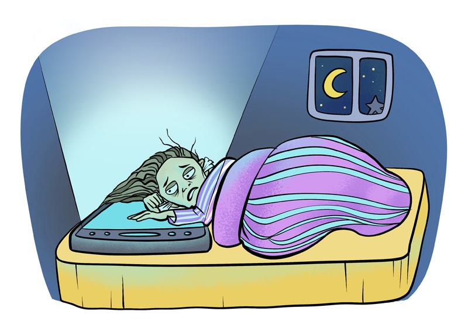

El bienestar digital constituye un área de estudio interdisciplinaria que analiza la relación entre el uso de tecnologías de la información y la calidad de vida de las personas. Su objetivo principal es promover hábitos tecnológicos conscientes que contribuyan al desarrollo integral del individuo en entornos digitales.
¿Qué es el Bienestar Digital?
El bienestar digital se define como el estado óptimo de salud y satisfacción que una persona alcanza al establecer una relación equilibrada con las tecnologías digitales. Este concepto abarca tres dimensiones fundamentales: la salud física (ergonomía, descanso visual, prevención de sedentarismo), la salud mental (gestión del estrés, regulación emocional, atención plena) y la salud social (comunicación interpersonal, comunidades en línea, límites digitales). La Organización Mundial de la Salud ha señalado la importancia de abordar el uso excesivo de pantallas como un factor determinante en la salud pública contemporánea.
Relevancia del Bienestar Digital en la Actualidad
En la sociedad actual, caracterizada por la hiperconectividad y la transformación digital acelerada, el bienestar digital adquiere una relevancia creciente. Los estudios en este campo han identificado beneficios significativos asociados a prácticas de uso consciente de la tecnología:
Reducción de la fatiga mental: La implementación de pausas activas y períodos de desconexión digital permite la recuperación cognitiva y disminuye los niveles de agotamiento mental asociados al procesamiento continuo de información.
Mejora de la calidad del sueño: La exposición a la luz azul emitida por dispositivos electrónicos, especialmente durante las horas previas al descanso, puede alterar la producción de melatonina. Establecer límites en el uso de pantallas antes de dormir contribuye a la regulación del ciclo sueño-vigilia.
Optimización de la concentración: La fragmentación de la atención causada por notificaciones constantes y el multitasking digital afecta negativamente el rendimiento académico y laboral. Las estrategias de atención plena (mindfulness) aplicadas al entorno digital favorecen el enfoque sostenido.
Fortalecimiento de relaciones interpersonales: El uso equilibrado de las tecnologías de comunicación permite mantener vínculos significativos tanto en entornos presenciales como virtuales, evitando el aislamiento social y fomentando la inteligencia emocional.
Estrategias Fundamentales para el Desarrollo del Bienestar Digital

La adopción de prácticas de higiene digital representa un componente esencial en la construcción de hábitos saludables. A continuación, se presentan recomendaciones basadas en principios de ergonomía, psicología del comportamiento y gestión del tiempo:
✓ Pausas activas y descanso visual: Aplicar la regla 20-20-20 (cada 20 minutos, observar un objeto a 20 pies de distancia durante 20 segundos) para reducir la tensión ocular. Programar intervalos de desconexión durante la jornada diaria.
✓ Higiene del sueño digital: Establecer un período mínimo de 60 minutos sin exposición a pantallas antes del momento de descanso. Utilizar modos nocturnos o filtros de luz azul en los dispositivos cuando sea necesario.
✓ Gestión estructurada del tiempo: Definir horarios específicos para actividades académicas, laborales y de ocio digital. Emplear técnicas de productividad como el método Pomodoro para alternar períodos de trabajo concentrado con descansos.
✓ Regulación del uso de redes sociales: Configurar límites de tiempo en aplicaciones de consumo digital, desactivar notificaciones innecesarias y practicar la curaduría consciente de los contenidos consumidos para evitar la sobrecarga informativa.